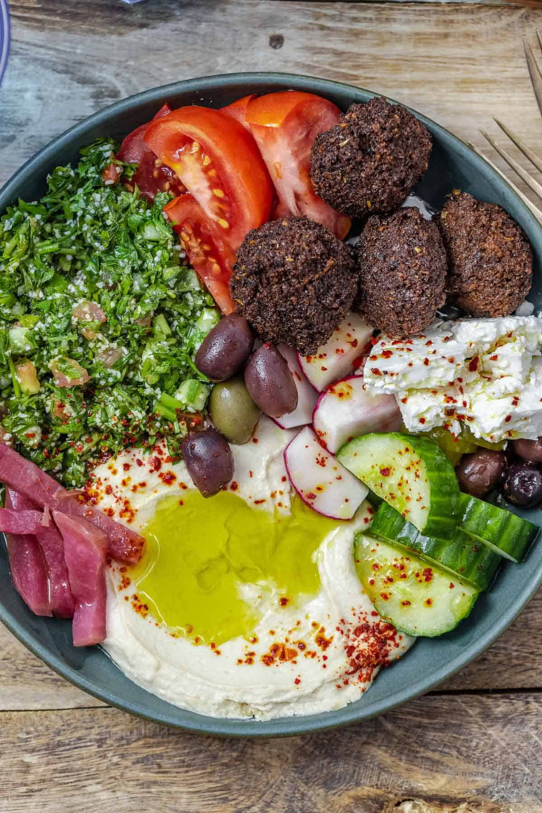

Raquel's Falafel-inspired Roasted Veggie Bowls
These are a Mediterranean style rice bowl with delicious roasted vegetables, crispy chickpeas, an assortment of fresh vegetables, and a wonderful lime-tahini dressing.
Ingredients
For the roasted vegetables
- 1/4 cup extra virgin olive oil
- 12 garlic cloves,minced
- 1 tablespoon ground cumin
- 1 tablespoon ground coriander
- 1 tablespoon kosher salt
- 1 head of cauliflower, cut into bite size pieces
- 10 ounces cremini mushrooms, stemmed and quartered
For the roasted chickpeas
- 2 (15 ounce) cans chickpeas, drained and rinsed
- Extra-virgin olive oil
- Kosher salt
- Seasonings of choice
For the lime-tahini dressing
- 1 or 2 large garlic cloves, minced
- 3/4 cup tahini
- Juice of 3 large limes (about 6 tablespoons)
- Kosher salt
- 1 cup roughly chopped fresh parsley leaves (optional)
For the bowls
- Cooked long-grain white rice (about 4 cups)
- Crispy chickpeas
- 2 Persian cucumbers, chopped
- 1 cup cherry or grape tomatoes, quartered
- 1/4 red bell pepper, finely chopped
- 2 scallions, thinly sliced
- 2 tablespoons chopped curly parsley
- Lime-tahini dressing
Instructions
For the chickpeas
- Use some paper towls to pat the chickpeas completely dry. Line a large sheet pan with paper towels and spread the chickpeas on top. Let thoroughly dry, 10 to 20 minutes.
- Meanwhile, position a rack in the center of the oven and preheat the oven to 400F.
- Transfer the dry chickpeas to a bowl, remove and discard the paper towels from the sheet pan, the return the chickpeas to the pan. Drizzle the chickpeas with enough olive oil to coat (about 2 tablespoons) and sprinkle with about 1 teaspoon of salt. Toss the chickpeas, making sure they are well-coated with the olive oil, the spread the chickpeas evenly on the sheet pan in a single layer.
- Roast the chickpeas, shaking the pan every 10 minutes or so for even cooking, until they turn a nice deep golden brown and their exterior is nice and crispy, anywhere from 25 to 35 minutes.
- Immediately season the chickpeas with your seasoning of choice.
For the lime-tahini dressing
- In the bowl of a food proccesser fitted with the multipurpose blade, place the garlic, tahini, lime juice, and about 1/4 teaspoon salt. Blend until the sauce thickens as it emmulsifies.
- Add 1 to 2 teaspoons of water at a time as needed, blending after each addition, until the mixture is creamy yet runny (like a creamy salad dressing). Taste and adjust the seasoning to your liking.
- Transfer the sauce to a serving bowl and stir in the parsley (if using). Cover and refigerate in an airtight container for up to 3 days.
For the bowls
- Preheat the oven to 425F
- In a large bowl whisk together the olive oil, garlic, cumin, coriander, and salt. Add the cauliflower and mushrooms and toss to coat well in the oil and spices. Transfer to a parchment-lined sheet pan and toast until very tender and brown, 25 to 30 minutes, stirring midway through. Remove from oven and set aside.
- Divide the rice into 4 bowls. Top with cauliflower and mushrooms, then add a sprinkle of chickpeas, sucumbers, tomatoes, bell pepper, scallion, and parsley. Drizzle with the lime-tahini dressing and serve.